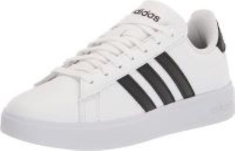
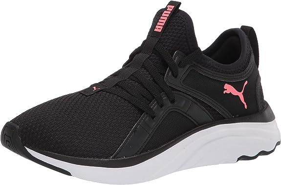

𝓦𝓸𝓶𝓮𝓷 𝓢𝓱𝓸𝓮𝓼!
Adidas womens grand court shoe

About Me!
- Rubber sole!.
- Women's classic tennis shoes with a minimalist vibe.
- RUBBER OUTSOLE: The rubber outsole provides outstanding grip and a sleek, low-profile look
- CUSHIONED MIDSOLE: Cloudfoam midsole for step-in comfort and superior cushioning
- TEXTILE LINING: Textile lining provides a soft, comfortable feel
𝓟𝓤𝓜𝓐 𝓦𝓸𝓶𝓮𝓷'𝓼 𝓢𝓸𝓯𝓽𝓻𝓲𝓭𝓮 𝓻𝓾𝓷𝓷𝓮𝓻𝓼!.

About me!
- Rubber sole!.
- Bootie construction for easy slip on comfort.
- PUMA’s softest foam providing extreme cushioning and all-day comfort.(Amazing for Walks)
- Zoned heel/toe rubber for outsole traction during training.
- Target gender: female.
𝓦𝓸𝓶𝓮𝓷 𝓝𝓲𝓴𝓮 𝓐𝓲𝓻 𝓕𝓸𝓻𝓬𝓮𝓻𝓼!

- Rubber sole.
- Low-cut silhouette for a lo-to-the ground feel and versatile look!.
- Leather and textile upper for premium durability.
- Metal deubre on the laces with “AF-1 ‘82” honoring the shoe’s debut.
- Perforations on the toe and sides adds ventilation!.
Hope you enjoyed this website!⭐